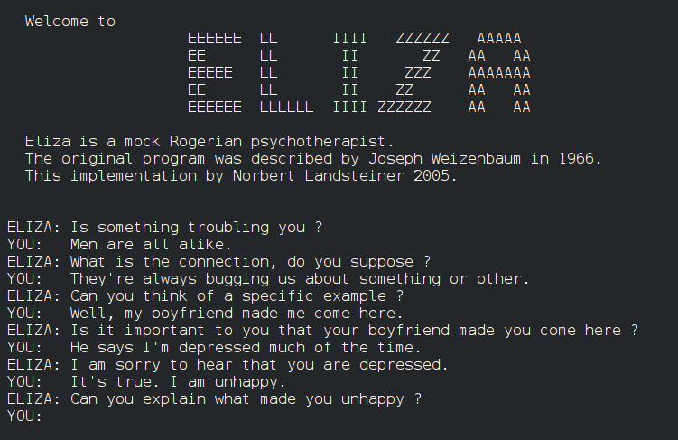
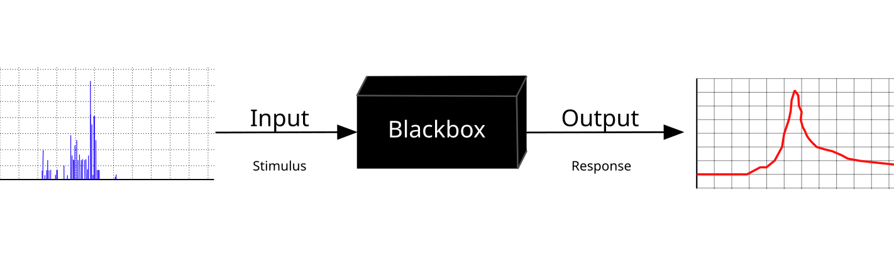
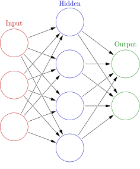
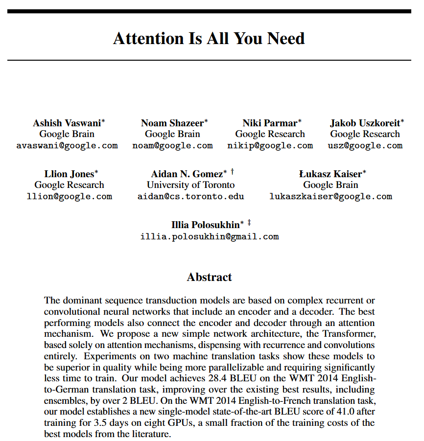
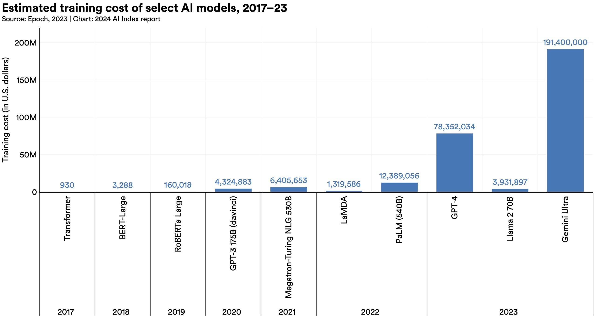
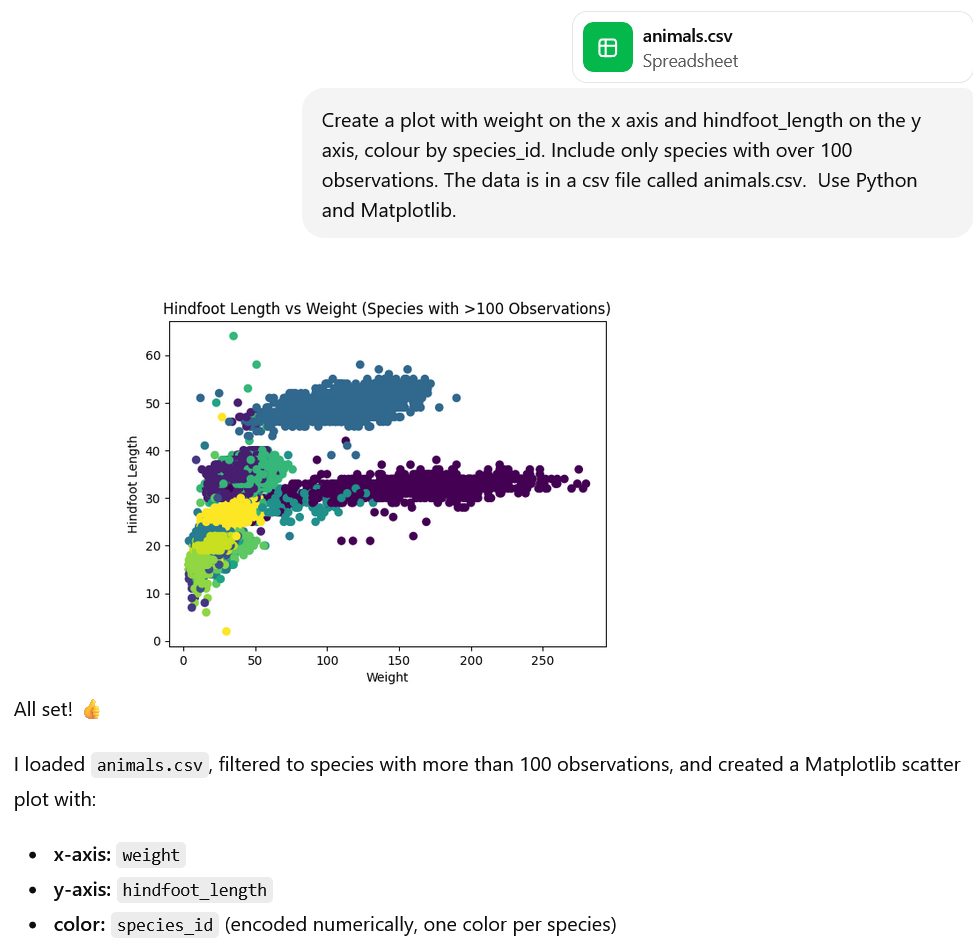
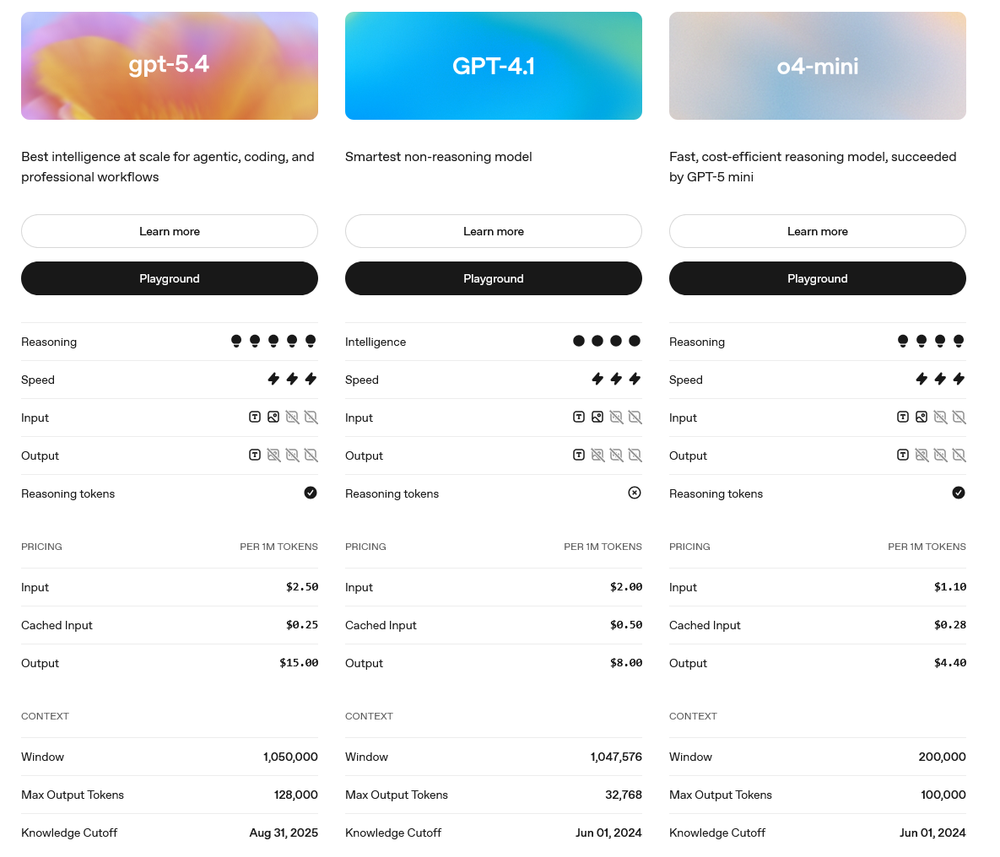
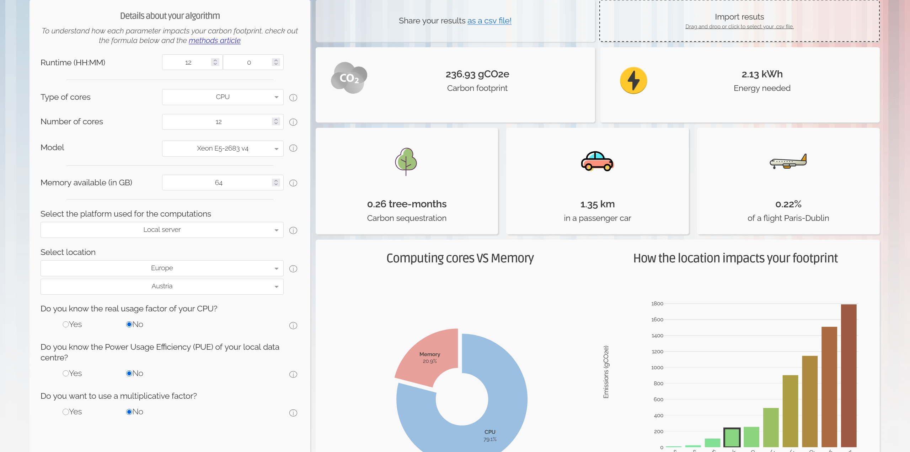

Content from Introduction
Last updated on 2026-02-24 | Edit this page
Estimated time: 12 minutes
Overview
Questions
Objectives
- Describe the AI landscape and how key terms (AI, machine learning, deep learning, LLMs) relate to one another.
- Explain in plain language how machine learning models learn from data.
- Describe what a neural network is and why “deep” learning is powerful.
- Explain how large language models (LLMs) work at a conceptual level.
- Critically evaluate claims about AI capabilities and limitations in a research context.
- Identify potential use cases and ethical considerations for AI in their own research.
Content from What is Artificial Intelligence?
Last updated on 2026-03-15 | Edit this page
Estimated time: 27 minutes
Overview
Questions
- What is AI?
- What are some categories of AI?
- Which factors have contributed to the AI boom over the last few years?
Objectives
- Give a working definition of Artificial Intelligence.
- Explain a test for machine intelligence.
- Describe how AI, machine learning, deep learning, and LLMs relate to each other using a nested diagram.
Defining AI
Artificial Intelligence, or AI, is a broad term. A useful working definition is:
AI refers to computer systems that perform tasks which would typically require human intelligence.
These tasks might include recognising images, understanding language, making recommendations, detecting patterns in data, or playing strategic games.
Noticing AI
Can you think of an AI system you have encountered recently? What task was it performing?
Write down one example and briefly describe what input it received and what output it produced.
Examples might include:
- A spam filter classifying incoming emails as “spam” or “not spam”.
- A recommendation system suggesting articles, products, or videos based on previous behaviour.
- Autocomplete predicting the next word or line of code while you type.
- A medical imaging tool highlighting areas of a scan that may require clinical attention.
In each case, the system is performing a specific task based on patterns learned from data.
It is worth noting that AI is not a single technique or tool. It is an umbrella term covering a wide range of approaches developed over several decades.
A Brief History of AI in Three Phases
Rule-based systems (1950s–1980s) Early AI systems relied on explicit rules written by humans. For example, a medical expert system might contain hundreds of “if–then” statements created by specialists, designed to lead to a diagnosis. These systems could perform well in narrow domains but were inflexible and difficult to scale. For example, a chatbot called ELIZA was developed in 1966, it answered questions only according to explicitly defined rules.

Statistical approaches (1980s–2000s) Researchers began using probability and statistics to handle uncertainty and variability in real-world data. Instead of hard-coded rules, systems estimated likelihoods and made predictions based on data.
Modern machine learning (2000s–present) With increased data and computing power, systems began to “learn” patterns directly from large datasets. Rather than being told exactly what to do, they infer patterns from examples.
Throughout all these phases, the goal has remained broadly the same: to build systems that can carry out tasks we associate with intelligent behaviour.
In 1950 Alan Turing proposed a test for machine intelligence, known as the Turing Test:
“The idea of the test is that the machine has to try and pretend to be a man, by answering questions put to it, and it will only pass if the pretence is reasonably convincing. A considerable portion of a jury, who should not be experts about machines, must be taken in by the pretence”
So, this test involves a human judge engaging in natural language conversations with both a human and a machine designed to generate human-like responses. The machine passes the test if it can convince the judge that it is human a significant fraction of the time.
A 2025 pre-print reports the performance of AI systems including ELIZA and GPT-4.5 in two randomised, controlled, and pre-registered Turing tests. Participants had 5 minute conversations simultaneously with another human participant and one of these systems before judging which conversational partner they thought was human. When prompted to adopt a humanlike persona, GPT-4.5 was judged to be the human 73% of the time: significantly more often than the real human participant was selected. In contrast, ELIZA was judged to be the human only 23% of the time(Jones & Bergen, 2025).

This result illustrates how capable current systems have become at specific tasks. However, passing a five-minute conversation test is not the same as general intelligence. GPT-4.5 has been trained on an enormous quantity of human-written text, which makes it exceptionally good at producing human-like language and this is exactly what the Turing test measures. It is, in a sense, the task it was most directly prepared for.
It’s important that we also consider what the same system cannot do. It cannot walk into an unfamiliar laboratory and figure out how the equipment works. It cannot notice that a colleague seems stressed and decide whether to ask about it. It cannot read a paper, recognise that the methodology is flawed, and devise a better approach. These are things a competent human researcher does routinely, involving transferring knowledge and judgement flexibly across situations they have never seen before. No current AI system has of the components we would associate with human intelligence.
The AI Family Tree
AI can be visualised as a set of nested fields. Each inner layer represents a more specific set of techniques within the broader area.
┌─────────────────────────────────────────┐
│ Artificial Intelligence │
│ ┌───────────────────────────────────┐ │
│ │ Machine Learning │ │
│ │ ┌─────────────────────────────┐ │ │
│ │ │ Deep Learning │ │ │
│ │ │ ┌───────────────────────┐ │ │ │
│ │ │ │ LLMs (e.g. GPT, etc) │ │ │ │
│ │ │ └───────────────────────┘ │ │ │
│ │ └─────────────────────────────┘ │ │
│ └───────────────────────────────────┘ │
└─────────────────────────────────────────┘We can interpret this diagram from the outside in:
- Artificial Intelligence is the broadest category. It includes any computational method aimed at performing tasks associated with intelligence.
- Machine Learning is a subset of AI focused on systems that learn patterns from data rather than relying purely on hand-written rules.
- Deep Learning is a subset of machine learning that uses multi-layered neural networks to model complex patterns.
- Large Language Models (LLMs) are a specific application of deep learning, trained on vast amounts of text data to generate and understand language.
As the course progresses, we will move gradually from the outer layer towards the inner layers, building conceptual understanding at each step.
Why AI Now?
AI research has existed for decades, so why has it become so prominent recently?
Three enabling factors have converged:
Data availability: The growth of the internet, digital services, sensors, and large-scale data collection has created vast datasets for training models.
Computing power: Graphics Processing Units (GPUs), originally developed for rendering images in gaming, turned out to be highly effective for the kinds of parallel computations used in deep learning.
Algorithmic advances: New training methods and model architectures have significantly improved performance, particularly in areas such as image recognition and natural language processing. For example the transformer architecture that underpins most large language models (transformer is the ‘T’ in ChatGPT)
The current wave of AI is therefore not the result of a single breakthrough, but the interaction between data, hardware, and improved methods.
- Artificial Intelligence is a broad field concerned with systems that perform tasks associated with human intelligence.
- Machine learning is a subset of AI that learns from data.
- Deep learning is a subset of machine learning based on multi-layered neural networks.
- Large language models are a specific type of deep learning model focused on language.
- The recent growth of AI has been driven by data availability, increased computing power, and algorithmic advances.
References
- Jones, C. R., & Bergen, B. K. (2025). Large language models pass the turing test. arXiv preprint arXiv:2503.23674.
- Toosi, A., Bottino, A. G., Saboury, B., Siegel, E., & Rahmim, A. (2021). A brief history of AI: how to prevent another winter (a critical review). PET clinics, 16(4), 449-469.
- French, R. M. (2000). The Turing Test: the first 50 years. Trends in cognitive sciences, 4(3), 115-122.
Content from Machine Learning - Teaching Computers from Data
Last updated on 2026-03-15 | Edit this page
Estimated time: 25 minutes
Overview
Questions
- How is machine learning different from traditional programming?
- What are supervised, unsupervised, and reinforcement learning?
- What does it mean to train and test a model?
- What is overfitting, and why does it matter?
- When is machine learning the right choice — and when is it not?
Objectives
- Explain what machine learning is and how it differs from traditional programming.
- Distinguish between supervised, unsupervised, and reinforcement learning.
- Identify the main types of ML task: regression, classification, and clustering.
- Describe the concept of training, testing, and overfitting in plain language.
- Explain the difference between interpretable and black box models, and why it matters.
- Recognise when a traditional statistical approach may be more appropriate than machine learning.
From Rules to Learning
In traditional programming, a human writes explicit rules for some data,the computer follows them and provides some output.
For example, a researcher studying whether a scientific paper is relevant to a systematic review on arthritis interventions might write rules such as:
- If the paper mentions “randomised controlled trial” and the “arthritis”, include it.
- If the paper is published before 1990, exclude it.
The computer applies those rules to some data, in this case, paper abstracts, and the output is fully determined by the rules written in advance.
The logic flows like this:
Rules + Data -> Output
This works reasonably well when the criteria are clear and consistent. However, in reality, relevance is rarely so clean. Papers use different terminology, describe similar interventions in different ways, and sometimes the abstract alone is not enough to judge. Writing rules that handle all of this becomes increasingly difficult and fragile.
Machine learning takes a different approach. Instead of writing detailed rules, we provide:
- Data - a large collection of abstracts
- The desired outputs for a subset of the data - human judgements about whether papers are relevant
The system then learns the patterns that connect the two.
The logic becomes:
Data + Output -> Rules
In other words, the computer infers the rules for itself.
Machine Learning Analogy
A useful analogy is teaching a child to recognise dogs. You would not provide a formal definition involving ear angles and tail length. Instead, you would show many examples of dogs and non-dogs. Over time, the child internalises patterns that allow them to identify new dogs correctly.
Machine learning systems operate in a similar way. They detect statistical patterns in examples and use those patterns to make predictions about new data.
Three Types of Machine Learning
Machine learning is not one single method. It includes several different learning paradigms.
| Type | What the model has | What it learns to do | Example |
|---|---|---|---|
| Supervised Learning | Labelled examples (input + correct answer) | Map inputs to correct outputs | Email spam detection, disease classification |
| Unsupervised Learning | Unlabelled data only | Find hidden patterns or groups | Customer segmentation, topic modelling of papers |
| Reinforcement Learning | Reward signals from environment | Maximise a reward through trial and error | Game-playing AI, robot control |
Supervised learning
In supervised learning, each example includes both the input and the correct output.
For instance, a dataset of medical images might include thousands of scans labelled “tumour” or “no tumour”. The system learns to map image features to the correct diagnosis.
This is currently the most widely used type of machine learning in research and industry.
Unsupervised learning
In unsupervised learning, the system is given data without explicit labels. Its task is to find structure within the data.
For example, given a large collection of research paper abstracts, an unsupervised model might group them into themes based on patterns of word usage. No one tells the system what the topics are in advance.
This approach is useful for exploration and discovery.
Reinforcement learning
In reinforcement learning, an agent interacts with an environment and receives feedback in the form of rewards or penalties.
Over time, the system learns which actions maximise long-term reward. This approach has been used in game-playing systems and robotics.
Machine Learning in Research Scenarios
Match each scenario to supervised, unsupervised, or reinforcement learning:
- A tool that groups research papers into topics automatically, without anyone labelling the topics in advance.
- A system trained on thousands of labelled X-rays to flag potential tumours.
- A robot that learns to navigate a maze by receiving a reward signal each time it gets closer to the exit.
1 = Unsupervised learning 2 = Supervised learning 3 = Reinforcement learning
What Kind of Task Is It?
Machine learning can be applied to several different types of tasks: regression, classification, clustering and dimensionality reduction. Supervised learning is usually applied to regression and classification tasks, whereas unsupervised learning is often applied to clustering or dimensionality reduction tasks (although there are exceptions to both of these statements).
Regression — predicting a continuous numerical value. For example, predicting a patient’s length of hospital stay based on clinical variables, or estimating the yield of a crop from environmental measurements. The output is a number on a continuous scale.
Classification — predicting which category an input belongs to. For example, classifying an email as spam or not spam, identifying the species of a plant from an image, or flagging whether a research paper is relevant to a systematic review. The output is a label chosen from a defined set.
Clustering — grouping unlabelled data into meaningful clusters based on similarity, without being told in advance what the groups are. For example, grouping survey respondents by response patterns, or identifying subtypes of a disease from patient data.
Dimensionality reduction - compressing high-dimensional data into a simpler representation for visualisation or further analysis. For example, in gene expression research, scientists might compress thousands of gene measurements per patient down to two or three variables that capture the most meaningful variation, making it possible to plot all patients on a single chart and spot groupings that may correspond to clinically relevant subtypes.
When choosing the right machine learning algorithm for the job, often deciding which task is required is the first step. For a guide, have a look at the scikit-learn algorithm cheat sheet
How a Model Learns
Let’s walk through a simplified example of supervised learning:
- Start with a dataset of examples. For example, 10,000 labelled medical images.
- Split the data into two parts:
- A training set
- A test set
The training set is used to teach the model. The test set is kept separate and used only for evaluation.
This split matters because we want to know whether the model performs well on new, unseen data. If we test it on the same data it has already seen, we learn very little about its real-world usefulness.
- During training, the model adjusts its internal parameters. You can think of these as thousands or millions of adjustable dials. The system tweaks these settings to reduce the number of mistakes it makes on the training data.
- After training, we evaluate the model on the test set. This tells us how well it generalises beyond the examples it was shown during learning.
Overfitting
A key risk in machine learning is overfitting.
Overfitting occurs when a model learns the training data too well, including its noise and quirks. Instead of learning general patterns, it effectively memorises the examples.
An analogy is a student who memorises past exam papers word for word. They may perform extremely well on familiar questions, but struggle when the questions are phrased differently.
A well-trained model should capture underlying structure, not just memorise details.
Demonstration: Teachable Machine
A useful way to build understanding without the need to write code is to experiment with tools such as Teachable Machine. These tools allow you to train a simple image or sound classifier using your own examples, without any coding required.
Notice how the quality and quantity of training examples strongly influence the behaviour of the model.
Interpretable Models vs Black Box Models
Before choosing a machine learning approach, one of the most important questions to ask is:
“Do I need to understand why the model makes a particular prediction, or is the prediction itself sufficient?”
This is the distinction between interpretable and black box models.
An interpretable model produces outputs that can be traced back to a clear, human-readable explanation. A linear regression, for instance, gives you a coefficient for each input variable and you can see directly how much each factor contributed to the prediction. A decision tree reaches its conclusion through a series of simple yes/no rules that can be printed out and inspected. When accountability, transparency, or regulatory compliance matter, interpretability may be essential.
A black box model, such as a deep neural network with many layers, may produce highly accurate predictions, but the internal reasoning process is not directly accessible. You can observe the inputs and outputs, but the path between them involves thousands or millions of interacting numerical parameters that do not correspond to human-understandable concepts.
Consider an interpretable model when:
- You need to explain or justify individual predictions
- Your field has regulatory or ethical requirements for transparency
- Discovering which variables matter is part of the research question
- Stakeholders (e.g. patients, policymakers, or funders) need to understand the rationale
A black box model may be acceptable when:
- Predictive accuracy is the primary goal
- Outputs will be validated independently before acting on them
- Large volumes of complex data (images, audio) make interpretability impractical

When Not to Use Machine Learning
Machine learning is a powerful set of tools, but it is not always the right one. Depending on the research question, traditional statistics may be better suited.
The main factor that should help you decide whether your goal is explanation or prediction:
- Explanation involves understanding the relationship between variables, testing hypotheses, and drawing causal or inferential conclusions e.g. Does this treatment reduce recovery time?
- Prediction involves building a system that produces accurate outputs for new cases e.g. Can we flag likely hospital readmissions before they happen?
Traditional statistical methods including regression models, t-tests, and ANOVA have been developed with explanation as their primary goal. They come with well-understood assumptions and and inferential frameworks, such as p-values and confidence intervals, that are widely understood in research communities. When your goal is to understand what is going on and why, these tools are often more appropriate than a machine learning model.
Machine learning, by contrast, is optimised for predictive performance. It works well when the dataset is large, the relationship between inputs and outputs is complex, the goal is prediction rather than inference, and formal hypothesis testing is not required.
Many research workflows combine a statistical model to test a hypothesis, and then a machine learning model to build a practical prediction tool. The important thing is to choose machine learning or traditional statistics deliberately, based on your research question.
Signs that a traditional statistical approach may be more appropriate
- Your primary goal is to test a specific hypothesis.
- Your dataset is small (many ML methods need substantial amounts of data to generalise reliably).
- You need to quantify uncertainty formally, with confidence intervals or p-values.
- Assumptions are well-understood and can be checked (e.g. normality, independence).
- Interpretability is essential and a simpler statistical model performs adequately.
Choosing the Right Approach
For each research scenario below, decide whether you would lean towards a traditional statistical method, a machine learning model, or a combination of both:
- A clinical researcher wants to know whether a new drug significantly reduces blood pressure compared to a placebo, using data from a randomised controlled trial of 120 participants.
- A team wants to build a tool that automatically flags grant applications likely to score in the top 10%, trained on 50,000 previously scored applications.
- An ecologist wants to understand which environmental variables most strongly predict the presence of a rare species, and needs to report effect sizes to inform conservation policy.
Traditional statistics. The goal is hypothesis testing and effect estimation in a small, well-controlled dataset. A t-test or regression model is appropriate, interpretable, and produces the confidence intervals and p-values the clinical audience expects.
Machine learning. The goal is prediction, the dataset is large, and accuracy on unseen applications is the primary criterion. Interpretability may still matter (to avoid bias in funding decisions), so the choice of model and evaluation for fairness would both warrant careful thought.
Traditional statistics, possibly combined with ML. The goal is explanation and communication of effect sizes to a policy audience. A regression-based approach is likely more appropriate. If the dataset is large and the relationships complex, a machine learning model might improve predictive accuracy, but the interpretability requirement points toward simpler, explainable methods.
What Can Go Wrong?
Machine learning systems are only as good as the data they are trained on.
A common phrase is “garbage in, garbage out”. If the training data is incomplete, biased, or unrepresentative, the resulting model will reflect those limitations.
Research-relevant examples include:
- A text analysis model trained only on English-language literature will struggle with multilingual texts.
- A medical diagnostic model trained predominantly on one demographic group may perform poorly for others.
These issues are not purely technical, they’re ethically and societally important because they influence who benefits from AI systems and who may be disadvantaged by them. We will examine these ethical and societal questions in greater depth in Episode 5.
How Can I Train My Own Machine Learning Model?
For many research tasks, training a machine learning model from scratch can be useful and within the realm of possibility. Researchers do this regularly, not because off-the-shelf tools are unavailable, but because a custom model trained on domain-specific data can outperform a general-purpose one, and because owning the model gives you full control over how it is evaluated, documented, and reported.
What skills this requires
Training a conventional machine learning model requires programming skills, typically in Python or R, and familiarity with standard machine learning libraries such as scikit-learn (Python) or caret/tidymodels (R). You do not need to understand the mathematical derivations of the algorithms, but you do need to be comfortable working with tabular data, splitting datasets, selecting and configuring models, and interpreting evaluation metrics.
A basic understanding of data preparation is essential as most of the practical work in machine learning involves cleaning, transforming, and structuring data rather than tuning models. Familiarity with concepts such as cross-validation, train/test splits, and overfitting (covered earlier in this episode) will take you a long way.
An understanding of statistics is also valuable. Understanding what your evaluation metrics actually mean, and being able to reason about whether your model has learned something meaningful or has simply exploited a pattern in the training data, requires a degree of statstical understanding.
If you are new to programming or data science, many researchers begin with the Carpentries lessons on Plotting and Programming in Python or R for Reproducible Scientific Analysis, followed by the Introduction to Machine Learning with Python lesson in the Carpentries Incubator.
Working with a Research Software Engineer
If the machine learning component is central to your research, working with a Research Software Engineer (RSE) could be a helpful. RSEs can help you choose appropriate methods, implement them correctly and efficiently, and ensure your code is reliable, robust and well-documented.
- Machine learning systems learn patterns from data rather than following rules.
- Training and test sets help us assess whether a model generalises to new data.
- Interpretable models make their reasoning transparent whereas black box models do not.
- Traditional statistical methods are often more appropriate than machine learning when the goal is explanation rather than prediction, particularly with small datasets.
- The quality and representativeness of training data strongly influence model performance and fairness.
References
- scikit-learn algorithm cheat sheet
- Van De Schoot, R., De Bruin, J., Schram, R., Zahedi, P., De Boer, J., Weijdema, F., … & Oberski, D. L. (2021). An open source machine learning framework for efficient and transparent systematic reviews. Nature machine intelligence, 3(2), 125-133.
- Teachable Machine
- geeksforgeeks Introduction to Machine Learning
- Overfitting in Machine Learning
Content from Deep Learning and Neural Networks
Last updated on 2026-03-11 | Edit this page
Estimated time: 12 minutes
Overview
Questions
- What is an artificial neural network?
- What does “deep” mean in deep learning?
- How do neural networks learn from errors?
- Why does deep learning require substantial data and computing resources?
Objectives
- Describe what an artificial neural network is using an analogy.
- Explain what “deep” means in deep learning.
- Identify types of tasks that deep learning excels at.
- Understand why deep learning requires a lot of data and computing power.
What is a Neural Network?
Deep learning is built on a concept called the artificial neural network.
The name comes from a loose analogy with biology. In the human brain, neurons receive signals from other neurons. If the combined signal is strong enough, the neuron “fires” and passes a signal onwards.

An artificial neuron works in a simplified mathematical way:
- It receives numbers as inputs.
- Each input is multiplied by a weight, which represents its importance.
- These weighted values are added together.
- If the result is large enough, the neuron produces an output.
- That output is then sent to the next layer.
Both biological and artificial neurons act as filters that combine many incoming signals, weighted by importance, and decide whether the combined signal should be passed to the next layer and, if so, how strongly the it should be passed on.
The differences, however, are just as important. A biological neuron is a very complex living cell embedded in a chemical environment. It communicates using electrochemical pulses, it can form and prune thousands of connections dynamically, and it operates within a brain of roughly 86 billion neurons shaped by millions of years of evolution. On the other hand, an artificial neuron is an arithmetic operation of a weighted sum followed by a mathematical function. The weights are adjusted during training by an algorithm, not by biological processes. Modern neural networks, despite their name, are better understood as powerful pattern-matching mathematical models than as simulations of the brain.
A single artificial neuron is rarely useful on its own. But, if you arrange many neurons together, you get a layer, and if you stack multiple layers you get a neural network. It is the depth of the layer stacking that gives deep learning its name and its power.
Layers, Depth and Feature Learning
A neural network is typically organised into three types of layers:
- An input layer, which receives the raw data.
- One or more hidden layers, where most of the computation happens.
- An output layer, which produces the final prediction.
As data passes through the network, each layer transforms it into a slightly more abstract representation.
For example, in image recognition:
- An early layer might detect simple edges and lines.
- A later layer might detect shapes or textures.
- A deeper layer might detect complex structures such as faces.
In text processing:
- Early layers might detect characters or short word patterns.
- Middle layers might represent words or phrases.
- Later layers might capture aspects of meaning or context.
This hierarchical pattern detection is one of the main strengths of deep learning.
The word deep simply refers to the number of hidden layers. A shallow model might have one hidden layer. A deep model may have dozens or even hundreds of layers.

Discussion
Deep learning has transformed image recognition and, in some contexts, now matches or exceeds human performance. Can you identify a research application in your field where this capability is useful or already in use?
Examples may include:
- Analysing satellite imagery to detect environmental change.
- Identifying cell structures in microscopy images.
- Digitising and classifying historical documents.
- Transcribing and analysing handwritten documents
Training a Neural Network
First, a collection of software “neurons” are created and connected together, allowing them to send messages to each other. Next, the network is asked to solve a problem, which it attempts to do over and over, each time strengthening the connections that lead to success and diminishing those that lead to failure.
During training, a neural network follows a repeated cycle.
- The network receives an input and produces a prediction.
- The prediction is compared with the correct answer.
- The difference between them is calculated as an error.
- This error signal is sent backwards through the network.
- The weights are adjusted slightly to reduce future errors.
Sending the error backwards through the network is known as backpropagation. We’ll mention this again in the next episode in the context of large language models.
This process is repeated across many examples, often millions, and over many passes through the dataset.
Try Training a Neural Network
You can experiment with the process of training a neural network interactively using tools such as Tensorflow Playground.
The main task in TensorFlow Playground is classification: the network is trying to learn to separate two groups of data points — shown as orange and blue dots — by finding a boundary between them.
What the colours mean
The data points (the small circles on the graph) are coloured orange or blue to show which group they belong to.
The background colour of the output panel shows what the network is currently predicting for every possible point on the graph. If an area is blue, the network would classify any point there as belonging to the blue group. If it is orange, it would classify it as orange. The deeper and more saturated the colour, the more confident the network is in that prediction.
As training progresses, watch how the background pattern shifts and sharpens. This is the network adjusting its internal weights and gradually learning a better boundary between the two groups.
The lines connecting neurons in the hidden layers show the weights of the connections between neurons. A blue line means the connection has a positive weight and so the signal is passed forward and amplified. An orange line means the connection has a negative weight and so the signal is inverted or suppressed. Thick lines indicate strong weights in either direction whereas thin lines indicate weak ones.
What to try
- Press the play button and watch the network train. Notice how the background pattern in the output panel gradually changes as the network improves. The epoch counter shows how many times the network has passed through the training data.
- Try increasing the number of hidden layers or neurons and observe whether the network can learn more complex boundaries.
- Try a more complex dataset (selectable on the left under ‘DATA’) and see whether the same network architecture struggles to separate the groups.
- Pause training at different points and observe how the confidence of the predictions, shown by colour intensity, changes over time.
Why So Much Data and Computing Power?
Modern neural networks often contain millions or even billions of adjustable parameters. Training them involves:
- Processing very large datasets. In TensorFlow Playground you are working with a few hundred data points at most, a fraction of what real-world models require. Real models might be trained on millions of data points.
- Performing repeated calculations across all parameters. A deep learning model may have billions of equivalent values all being updated simultaneously.
- Iterating many thousands of times. Models may require tens of thousands of passes through the training data to converge.
This requires significant computational resources, often specialised hardware. Without large datasets and substantial computing power, deep models tend to perform poorly.
Types of Deep Learning
There are many neural network architectures, each suited to particular tasks. Just a few common examples are discussed below.
Convolutional Neural Networks (CNNs)
CNNs are particularly effective for image and video analysis. They use specialised layers that focus on local patterns, such as edges and textures. Image classification tools are built on this type of architecture.
Recurrent Neural Networks (RNNs)
RNNs were designed to handle sequential data, such as time-series measurements or text. They process information step by step, maintaining a form of internal memory. In many applications, they have now been replaced by more advanced architectures.
Transformers
Transformers are the foundation of most modern natural language processing systems. They are especially effective at modelling relationships within sequences of text and form the basis of contemporary large language models, which we will examine in the next episode.
To read more about different neural network architectures have a look at the Neural Network Zoo, a cheat sheet for neural network architectures.
How can I Train My Own Deep Learning Model?
Training a deep learning model from scratch is significantly more demanding than training a conventional machine learning model, but it is not out of reach for motivated researchers, particularly with access to institutional computing infrastructure and Research Software Engineering support. More commonly, researchers work with pre-trained models and adapt them, rather than training from scratch.
What skills this requires
Deep learning requires all of the skills needed for conventional machine learning (programming in Python, data preparation, evaluation) plus additional capabilities. You will need familiarity with a deep learning framework such as PyTorch or TensorFlow, both of which have extensive documentation and active research communities.
Access to appropriate hardware is a practical requirement. Training deep learning models on a standard laptop CPU is rarely feasible for research-scale tasks. Most researchers use GPUs, either through institutional high-performance computing (HPC) facilities or cloud platforms such as Google Colab, which provides free GPU access for smaller experiments.
Experiment management becomes important at this level of complexity. Tracking which model configuration produced which results, managing large datasets, and handling training runs that may take hours or days requires a great deal of organisation and tools such as Weights & Biases or MLflow.
Deep learning also demands a somewhat deeper understanding of model architecture and training dynamics than conventional ML. You need enough conceptual understanding to diagnose when training is going wrong, for example, when a model is failing to learn, overfitting, or producing unexpected outputs.
- Artificial neural networks consist of layers of weighted computational units inspired by biological neurons.
- ‘Deep’ refers to having multiple hidden layers that learn increasingly abstract representations.
- Training involves making predictions, measuring error, and adjusting weights using backpropagation.
- Deep learning excels at complex pattern recognition tasks such as image, audio, and text analysis.
- Large models require extensive data and computing resources to train effectively.
References
Content from Large Language Models
Last updated on 2026-03-13 | Edit this page
Estimated time: 30 minutes
Overview
Questions
- What is a large language model and how does it relate to deep learning?
- How are LLMs trained, and what does “large” actually mean?
- Why do LLMs sometimes produce confident but incorrect information?
- What are the key limitations I should understand before using an LLM in my research?
Objectives
- Explain what an LLM is and where it sits within the broader AI landscape.
- Describe the Transformer architecture and the attention mechanism.
- Distinguish between pre-training and fine-tuning.
- Define hallucination, knowledge cutoff, and context window, and explain why they matter for research use.
Introduction
Over the previous two episodes we have built up a picture of how machines can learn from data, and how deep neural networks can learn rich, layered representations of the world. In this episode we apply those ideas to language. We will explore Large Language Models (LLMs), the technology behind tools such as ChatGPT, Claude, Gemini, and Copilot, to understand what they are, how they are built, and what their real limitations are.
By the end of this episode you will be in a much stronger position to use these tools critically and responsibly in your own research
What is a Large Language Model?
A Large Language Model is a type of deep learning model trained on vast quantities of text, with the goal of learning how language works so that it can generate and respond to text in a coherent, useful way.
The word “large” refers to two things at once:
- The training data: modern LLMs are trained on trillions of words drawn from books, websites, academic papers, code repositories, and more.
- The number of parameters: parameters are the adjustable weights inside the network that are learned during training. Leading models have hundreds of billions, or even trillions, of these values.
Putting “large” in perspective
One trillion is 1,000,000,000,000. To give a sense of scale: if you counted one parameter per second without stopping, counting to one trillion would take over 31,000 years. The sheer number of parameters is what allows these models to store and manipulate rich, nuanced representations of language.
Despite their apparent sophistication, LLMs are trained on a surprisingly simple objective: given a sequence of words, predict what word is most likely to come next.
Consider the sentence:
The researcher submitted her manuscript to the…
A well-trained model should assign a high probability to words like journal or publisher, and a low probability to words like submarine or Tuesday. By doing this billions of times across an enormous training corpus, the model is forced to learn grammar, facts, writing conventions, and even something resembling reasoning because all of these are encoded in the statistical patterns of language.
This is sometimes called self-supervised learning: the training data provides its own labels (the next word is always known from the text itself), so no human annotation is required.
Transformer Architecture
LLMs are built on an architecture called the Transformer, introduced in a landmark 2017 paper titled “Attention Is All You Need” (cited over 234,000 times as of Spring 2026) written by researchers working for Google. Before the Transformer, models processed text one word at a time, which:
- was slow
- made it hard to capture relationships between words that were far apart in a sentence.
The Transformer solved both problems.

The Attention Mechanism
The key innovation of the Transformer is the attention mechanism. Rather than processing words in isolation, attention allows the model to look at all the words in a passage simultaneously and learn which ones are most relevant to understanding each particular word.
Consider this sentence:
The bank was steep and muddy, so she slipped climbing down it.
When processing the word bank, a human reader immediately uses context clues such as steep, muddy, and climbing, to understand that this is a riverbank, not a financial institution. The attention mechanism allows a Transformer to do something similar: it learns to assign higher attention weights to the words most relevant for correctly interpreting each part of the text.
The attention mechanism combined with the availability of large-scale computing hardware, triggered a step up in what language models could do. Essentially all major LLMs today including ChatGPT, Claude, and Gemini are built on the Transformer architecture.
How LLMs Are Trained: Pre-training and Fine-tuning
Building a capable LLM is typically a two-stage process.
Stage 1: Pre-training
In the pre-training stage, the model is trained from scratch on an enormous, general-purpose body of text. The training objective is to predict the next word. The model adjusts its billions of parameters through backpropagation (the backward flow of error through a neural network, see Episode 3) until it becomes very good at predicting text across a huge range of topics and styles.
Pre-training is extremely resource-intensive. Training a leading LLM can:
- Require thousands of specialised computer chips running in parallel for weeks or months.
- Consume millions of pounds’ worth of electricity and hardware time.
- Produce a significant carbon footprint. One study found that training a single large transformer model can emit over 283,000 kg of carbon
This cost means that pre-trained models are rarely trained from scratch by individual researchers or institutions. Instead, organisations release pre-trained base models that others can build on.
This bar plot below is from the Stanford Institute for Human-Centered Artificial Intelligence 2024 AI index. It shows the rapid increase in the computing cost of training large language models.

Stage 2: Fine-tuning
Once a base model exists, it can be fine-tuned. This means it can be trained further on a smaller, more targeted dataset to adapt its behaviour for a specific purpose or domain. For example, a base model might be fine-tuned:
- on medical literature to improve its performance on clinical questions.
- on legal documents to better support contract analysis.
- using human feedback to make it more helpful, harmless, and honest in conversation.
That last approach, of using human ratings to guide the model toward more desirable outputs, is called Reinforcement Learning from Human Feedback (RLHF). It is largely responsible for the conversational, ‘helpful assistant’ style of tools like ChatGPT. Human raters score model outputs, and the model is trained to produce outputs that score more highly.
You may have already encountered Reinforcement Learning from Human Feedback when a generative AI tool such as ChatGPT gives you two different responses and asks you to choose which one you prefer.
Pre-training and Fine-tuning Analogy
Think of pre-training as an undergraduate education: the student reads broadly across many subjects and develops general knowledge and reasoning skills. Fine-tuning is then like a postgraduate specialisation: the student goes deep into a specific field, building on their broad foundation.
A model trained this way inherits both the strengths and the limitations of its pre-training. If the pre-training data contained biased, outdated, or incorrect material, those properties will be present in the base model and may persist even after fine-tuning.
What LLMs Can Do
LLMs have demonstrated some amazing capabilities across a wide range of language tasks, including:
- Text generation and summarisation — producing coherent text, summarising long documents, drafting emails.
- Question answering — responding to factual queries based on patterns in training data.
- Translation — converting text between languages.
- Code generation — writing, explaining, and debugging computer code.
- Step-by-step reasoning — working through multi-step problems when prompted appropriately.
- Information extraction — identifying entities, relationships, or themes in text.
For researchers, LLMs offer potential value in tasks such as summarising literature, drafting sections of text for revision, assisting with qualitative coding, generating data analysis computer code, and exploring ideas interactively.
For example, given a dataset, an LLM can generate code for tasks such as data analysis. Generative AI tools can even run the code as well! This is incredible but we should be cautious when outsourcing these tasks to LLMs due to several limitations that we will discuss below.

What LLMs Cannot Do: Key Limitations
Understanding what LLMs cannot reliably do is at least as important as knowing what they can do, especially for research applications where accuracy and reproducibility matter.
Hallucination
Perhaps the most important limitation to understand is hallucination: LLMs often generate confident, fluent, plausible-sounding text that is factually incorrect.
This is not an occasional bug that will eventually be fixed, it is a fundamental property of how these models work. An LLM is optimised to produce coherent, contextually appropriate text but it is not optimised to produce truth. It has no direct access to a database of facts it can look up. Instead, it generates text by predicting what is most likely to come next, based on patterns learned during training.
In practice this means an LLM might:
- Invent citations to academic papers that do not exist, complete with plausible-sounding titles, authors, and journal names.
- State incorrect dates, statistics, or quotations with complete confidence.
- Describe the findings of a study inaccurately, even when the study is real.
For example, the Google AI Overviews result (10 August 2025) incorrectly stated that Joaquín Correa is the brother of Ángel Correa while in reality the two are unrelated.
Another example - when prompted to “summarize an article” with a fake URL that contains meaningful keywords, even with no Internet connection, ChatGPT generates a response that seems valid at first glance.

Why is it called ‘hallucination’?
The term is borrowed from psychology, where hallucination refers to perceiving something that is not actually there. When an LLM “hallucinates”, it generates content that feels real and is presented confidently, but has no basis in fact. The model has no way to flag its own uncertainty in the way a cautious human expert might say “I’m not certain, but I believe…”. That’s why it’s important to verify factual claims from LLMs using primary sources.
Knowledge Cutoff
LLMs are trained on data collected up to a specific point in time, this is known as their knowledge cutoff date. They have no awareness of events, publications, or developments that occurred after that date, unless they are connected to external tools such as a web search capability.
For example, GPT-5.4 (the latest OpenAI model as of March 2026) has a knowledge cutoff of August 31st 2025 and GPT-4.1 has a knowledge cutoff of 1st June 2024 (OpenAI Developers - Compare Models).
This matters particularly for research, where the most recent literature may be the most relevant. An LLM asked about the current state of a fast-moving field may give a confident account that is months or years out of date.

Stochasticity: Different Answers Each Time
LLM outputs are probabilistic rather than deterministic. Even when given exactly the same input, an LLM will often produce a different output on subsequent runs. This has implications for reproducibility in research: if you use an LLM in your methodology, you cannot guarantee that re-running your analysis will produce identical results.
Context Window
Every LLM has a context window, which is the maximum amount of text it can “see” and process at one time. You can think of it as the model’s working memory for a single interaction. If you provide a document that exceeds the context window, the model may be forced to ignore parts of it, potentially affecting the quality of its output.
Context window sizes vary widely across models and have grown considerably in recent years, but they remain a practical constraint when working with very long documents.
The context window for the free tier of ChatGPT using the model ‘GPT-5.3 Instant’ is 16,000 tokens (words, parts of words or punctuation), whereas the context window of ‘GPT-5.4 Thinking’ is 400,000 tokens (OpenAI Help Docs)
No Genuine Understanding
Finally, it is important to resist the temptation to interpret LLM fluency as understanding. An LLM produces text by sophisticated pattern matching and it does not have beliefs, intentions, or knowledge in the way a human expert does. A model that can write a convincing paragraph about quantum mechanics has not ‘understood’ quantum mechanics, it has just learned what such paragraphs tend to look like.
Summary of key LLM limitations
| Limitation | What it means in practice |
|---|---|
| Hallucination | Outputs may be confidently wrong; always verify factual claims |
| Knowledge cutoff | The model is unaware of events after its training data ends |
| Stochasticity | The same question can produce different answers |
| Context window | Very long documents may be partially ignored |
| No verified understanding | Fluency does not equal accuracy or expertise |
Challenge: True or False?
For each statement below, decide whether it is true or false, and briefly explain your reasoning.
- When an LLM answers a question, it searches the internet and retrieves the most relevant facts.
- A fine-tuned LLM trained on medical literature will always give accurate medical information.
- Two researchers using the same LLM with the same prompt will always receive identical outputs.
- LLMs learn from their conversations with users, updating their knowledge in real time.
False. A standard LLM generates responses based on patterns learned during training — it does not retrieve information from a live database or the internet. Some LLMs are connected to web search tools, but this is an added capability, not a core feature of how the model works.
False. Fine-tuning on domain-specific text can improve performance in a given area, but it does not eliminate hallucination. A model can still produce confident but incorrect medical information. Domain expertise does not guarantee accuracy.
False. LLM outputs are probabilistic. The same input can produce different outputs across different sessions, or even within the same session, because the model samples from a distribution of possible next words rather than selecting a single deterministic answer.
False (for most deployed LLMs). Once trained and deployed, an LLM’s parameters are fixed — it does not learn from or retain information from individual conversations. Each session typically starts fresh from the same model state. (Some specialised systems are designed to update over time, but this is not the default.)
Testing the Limitations of LLMs
Go to a conversational AI tool such as ChatGPT, Microsoft Copilot or Claude and ask the following questions:
- Ask the model to provide three references on a niche academic topic. Note any invented or inaccurate citations.
- Ask the same question twice and compare outputs.
- Ask about a very recent event, publication, or development in your field. Observe how the model responds — it may admit uncertainty, speculate, give outdated information, or turn to web search capabilities.
- Ask the model to summarise a short paragraph you provide.
- Hallucination demo
- Stochasticity demo
- Knowledge cutoff demo
- This illustrates a task where LLMs genuinely add value when the output is reviewed critically.
Could I Build or Fine-Tune My Own LLM?
For most researchers and institutions, training an LLM from scratch is not realistic. The compute and financial resources required place it firmly in the domain of large technology companies. However, there are several meaningful ways researchers can work with and adapt language models without training one from scratch.
What skills this requires
Fine-tuning a language model requires all of the skills described in the deep learning section above, plus familiarity with the specific landscape of large language model tooling. This may include the Hugging Face ecosystem, which provides pre-trained models, fine-tuning utilities, datasets, and deployment infrastructure that have become the de facto standard for research-scale language model work.
Working with large datasets of text introduces additional challenges. Cleaning and de-duplicating large amounts of text, handling tokenisation, and managing data pipelines that may involve hundreds of gigabytes of text. These problems involve software engineering skills as well as machine learning expertise.
For fine-tuning, understanding the task you are optimising for matters a lot. You’d need to carefully design the approaches for determining which data to use and how to evaluate the model.
The Hugging Face ecosystem
Hugging Face is the primary hub
for open-source language model research. It hosts thousands of
pre-trained models, datasets, and fine-tuning tools, and its
transformers library is the standard Python interface for
working with language models in research. If you are considering any
form of language model work, this is the most important resource to be
aware of. The Hugging Face NLP Course is a free
introductory course on working with language models in code.
Summary
In this episode we have seen how the simple task of predicting the next word can lead to the powerful, general-purpose language tools that are reshaping how people interact with information today.
In Episode 5, we will bring together everything from the course to explore how AI tools, including LLMs, are being used in research today, and how to evaluate them critically and ethically.
- LLMs are deep learning models trained on massive text datasets to predict the next word, from which broad language capabilities emerge.
- The Transformer architecture, and its attention mechanism, is the foundation of all major modern LLMs.
- Pre-training builds general language knowledge; fine-tuning specialises a model for particular tasks or behaviours.
- LLMs hallucinate — they generate confident but factually incorrect content — because they are optimised for coherent text, not verified truth.
- LLMs have a knowledge cutoff date and are unaware of more recent events unless equipped with external search tools.
- Outputs are probabilistic: the same prompt can produce different responses, with implications for research reproducibility.
References
- Vaswani, A., Shazeer, N., Parmar, N., Uszkoreit, J., Jones, L., Gomez, A. N., … & Polosukhin, I. (2017). Attention is all you need. Advances in neural information processing systems, 30.
- Stanford AI Index
- OpenAI Help Docs
- OpenAI Developers Documentation
- Hugging Face
Glossary
Attention mechanism The core innovation of the Transformer architecture. Rather than processing words one at a time, the attention mechanism allows a model to consider all words in a passage simultaneously and learn which ones are most relevant to interpreting each particular word. It is what allows LLMs to handle long, complex text without losing track of meaning established earlier in a passage.
Context window The maximum amount of text an LLM can process in a single interaction i.e. its working memory for a conversation or task. Text that exceeds the context window may be silently ignored, which can affect the quality of outputs when working with long documents. Context window sizes are typically measured in tokens rather than words.
Fine-tuning The process of taking a pre-trained base model and training it further on a smaller, task-specific dataset to adapt its behaviour for a particular domain or purpose. Fine-tuning is far less resource-intensive than pre-training and is the most common way that general-purpose LLMs are adapted for specialised research or industry applications.
Foundation model A large model trained on broad data at scale that can be adapted for a wide range of downstream tasks. LLMs such as GPT-4 and Claude are foundation models. The term emphasises that these models serve as a foundation on which more specialised systems are built, typically through fine-tuning or prompting.
Grounding The process of connecting an LLM’s outputs to verifiable external information, such as a specific document, database, or knowledge base. Grounding reduces the risk of hallucination by anchoring the model’s responses to a defined source. Retrieval-Augmented Generation (RAG) is one common approach to grounding.
Hallucination The generation of text that is fluent and confident-sounding but factually incorrect or entirely fabricated. Hallucination is a fundamental property of how LLMs work and cannot currently be eliminated entirely. Common examples include invented academic citations, incorrect statistics, and inaccurate descriptions of real events or studies.
Inference The process of running a trained model to generate a response to a new input. Inference is what happens every time a user submits a prompt to an LLM. In contrast to training, which is a one-time or infrequent event, inference happens continuously at scale and ultimately accounts for the majority of an LLM’s cumulative energy consumption.
Knowledge cutoff The date up to which an LLM’s training data was collected. The model has no direct awareness of events, publications, or developments that occurred after this date. Some LLMs are connected to web search tools that partially compensate for this limitation, but the base model’s knowledge remains fixed at the cutoff.
Large Language Model (LLM) A type of deep learning model built on the Transformer architecture and trained on very large quantities of text to predict the next word in a sequence. Through this training process, LLMs develop broad capabilities in language generation, question answering, summarisation, translation, and reasoning. Examples include GPT-4, Claude, Gemini, and LLaMA.
Model card A standardised document published alongside an AI model that describes how it was trained, what data it was trained on, what it was evaluated on, and its known limitations and failure modes. Model cards are the primary resource for critically evaluating whether a model is appropriate for a given research use case.
Multiagent system A system in which multiple AI models (or multiple instances of the same model) work together to complete a task, each taking on a defined role. For example, one agent might search for information, a second might summarise it, and a third might check the result for errors. Multiagent systems can tackle more complex, multi-step tasks than a single model working alone, but they can also compound errors if one agent’s hallucinated output is passed unchecked to the next.
Parameter An adjustable numerical weight inside a neural network that is learned during training. Parameters are the internal settings that encode everything the model has learned. LLMs are described as “large” partly because they contain hundreds of billions or even trillions of parameters.
Pre-training The initial, large-scale training of an LLM from scratch on a broad general-purpose text corpus. Pre-training is the most computationally expensive stage of building an LLM and produces a base model with general language knowledge that can subsequently be fine-tuned for specific applications.
Prompt The input text provided to an LLM to elicit a response. A prompt might be a question, an instruction, a partially completed passage, or a combination of background context and a specific request. The design and wording of a prompt can substantially affect the quality and nature of the model’s output.
Prompt engineering The practice of deliberately designing and refining prompts to elicit better, more reliable, or more appropriately structured outputs from an LLM. Effective prompt engineering techniques include providing clear instructions, supplying relevant context, specifying the desired format of the response, and using examples to demonstrate the expected output style. While it requires no knowledge of the model’s internal workings, it can significantly improve the usefulness and consistency of LLM outputs in research workflows.
Retrieval-Augmented Generation (RAG) An approach that combines an LLM with a separate retrieval system, typically a database or document store. When a query is submitted, relevant passages are first retrieved from the external source and then provided to the LLM as context alongside the original query. This allows the model to generate responses grounded in specific, up-to-date, or domain-specific documents, reducing hallucination and overcoming the knowledge cutoff limitation without the expense of fine-tuning the model itself.
Reinforcement Learning from Human Feedback (RLHF) A training technique used to align LLM outputs with human preferences. Human raters score model-generated responses, and the model is trained to produce outputs that receive higher ratings. RLHF is responsible for the conversational, “helpful assistant” behaviour of deployed tools such as ChatGPT, and is distinct from both pre-training and fine-tuning in that it optimises for human approval rather than next-word prediction accuracy.
Self-supervised learning A form of machine learning in which the training labels are derived from the data itself, without any human annotation. LLM pre-training is self-supervised: the correct next word is always present in the original text, so no labelling effort is required. This property makes it possible to train on the enormous volumes of text needed to build capable LLMs.
System prompt A set of instructions provided to an LLM before a conversation begins, typically by the developer or organisation deploying the tool rather than the end user. System prompts define the model’s persona, set behavioural constraints, and establish the context in which the model is operating. Users often cannot see the system prompt, but it shapes every response the model gives.
Temperature A parameter that controls how predictable or varied an LLM’s outputs are. A low temperature makes the model more deterministic, consistently choosing the most probable next word. A higher temperature introduces more randomness, producing more varied and sometimes more creative outputs but also increasing the risk of incoherence or hallucination. Temperature is one reason why the same prompt can produce different outputs on different runs.
Token The basic unit of text that an LLM processes, which may be a word, part of a word, or a punctuation mark. Context window sizes and API costs are typically expressed in tokens rather than words. As a rough guide, 100 tokens is approximately 75 words in English.
Transformer The neural network architecture that underpins all major modern LLMs, introduced in the 2017 paper “Attention Is All You Need”. The defining feature of the Transformer is the attention mechanism, which allows it to process all parts of an input simultaneously and model relationships between distant words. Its ability to be trained efficiently on large datasets using parallel computing hardware made the current generation of LLMs possible.
Content from AI in Research
Last updated on 2026-03-15 | Edit this page
Estimated time: 25 minutes
Overview
Questions
- How are AI techniques being used across research disciplines today?
- What questions should I ask before adopting an AI tool in my research workflow?
- What ethical responsibilities do I have as a researcher using AI?
- How do I handle transparency and reproducibility when AI has been part of my methodology?
Objectives
- Identify AI applications relevant to your own research discipline.
- Apply a set of critical evaluation questions to any AI tool before adopting it.
- Describe the key ethical concerns raised by the use of AI in research, including bias, transparency, privacy, and attribution.
- Explain why reproducibility is a particular challenge when AI is part of a research workflow.
Introduction
Throughout this course we have built up a conceptual map of the AI landscape: from the broad field of machine learning, to deep learning with neural networks, to the language capabilities of large language models. In this final episode we ask the question: “What can I do with AI in my research?”
The goal of this episode is not to tell you whether to use AI in your research, but to allow you to make informed decisions when using AI including how to recognise opportunities, ask the right critical questions, and engage seriously with the ethical responsibilities that come with AI tools.
How Researchers Are Using AI Today
AI techniques are being applied across virtually every research domain. The examples below are illustrative rather than exhaustive. The aim of this episode is to help you begin connecting the technical ideas from earlier episodes to work that may be relevant to your own field.
Working with Text
Text is one of the most abundant forms of data in research, and AI tools for working with text are among the most mature. Researchers are using LLMs and related tools to:
- Assist with literature reviews by summarising large volumes of papers.
- Support qualitative coding of interview transcripts, field notes, or open-ended survey responses.
- Draft and revise written outputs such as grant applications, reports, and manuscripts.
- Extract structured information such as dates, entities, or relationships from unstructured documents such as historical records or clinical notes.
- Analyse sentiment or tone across large amounts of text, such as social media data or policy documents.
AI for Systematic Reviews
Tools such as ASReview use machine learning to accelerate the title and abstract screening stage of systematic reviews.
ASReview is an open-source machine learning tool designed specifically to assist researchers with the title and abstract screening stage of systematic reviews. Rather than screening papers in a fixed order, ASReview learns from each inclusion or exclusion decision the reviewer makes and continuously re-ranks the remaining papers, surfacing the most likely relevant records first.
This means the most important papers tend to be found early, and screening can stop before every record has been manually checked.
ASReview is free to use, runs in a web browser, requires no programming knowledge, and produces a full log of every decision made during screening, which can be reported in a methods section. It is described in a peer-reviewed paper in Nature Machine Intelligence (van de Schoot et al., 2021) and has been used in fields including medicine, psychology, and environmental science.
Analysing Images and Signals
Convolutional neural networks (introduced in Episode 3) have transformed the analysis of visual data and complex signals. Applications include:
- Classifying cell types or identifying anomalies in microscopy images.
- Detecting objects or changes in satellite or aerial imagery for environmental, geographic, or agricultural research.
- Supporting diagnostic imaging in clinical settings by identifying tumours, fractures, or lesions.
- Recognising patterns in audio signals such as birdsong, seismic activity, or cardiac rhythms.
Machine Learning to Identify Bird Species from Birdsong Features
Researchers used machine learning methods to investigate which acoustic features of birdsong are most helpful for species identification (Rivera et al., 2023)
Filling Gaps and Removing Clouds from Remote Sensing Images
Researchers used neural networks to reconstruct missing areas in images from satellite remote sensing (Wang et al., 2024). These images are a very important tool for observing the changes to the Earth’s land surface. For example, they are used to assess the impacts of climate change on ecosystems and monitoring the responses from plants.
Working with Structured Quantitative Data
Supervised machine learning methods are highly effective for analysing structured datasets of the kind that appear throughout quantitative research. For example:
- Predicting outcomes in clinical trials or epidemiological studies.
- Detecting anomalies or fraud in financial datasets.
- Classifying observations in ecology.
- Building recommendation systems for research infrastructure, such as suggesting reviewers for journal submissions.
Detecting and Predicting Fraud in Credit Card Transactions
Researchers studied the performance of three types of machine learning in detecting and predicting fraudulent credit card transactions. One machine learning model (random forest) was 96% accurate. These models will hopefully be used to protect credit card holders from fraud (Afriyie et al., 2023)
Code and Data Analysis Assistance
LLMs have rapidly become practical tools for researchers who work with data by writing code. AI coding assistants can write, explain, and debug code in languages such as Python and R, making computational methods more accessible to researchers who do not have a formal programming background. This can be incredibly useful but you should be cautious about using AI-written code in your research if you don’t understand it. Due to the limitations in LLMs, AI generated code isn’t always correct! There is currently limited peer-reviewed literature specifically evaluating LLM-generated research code in production workflows, most evidence is observational or anecdotal.
AI as a Collaborator
A theme running through all of these applications is that AI tools work best when used as a tool to complement the expertise of a human researcher, rather than replacing the researcher. An LLM that assists with qualitative coding still requires a researcher who understands the domain, the methodology, and the data. A computer vision model that flags anomalies in microscopy images still requires a scientist who can interpret what those anomalies mean.
Ethical Considerations
Using AI in research is an ethical as well as a methodological question. The following are among the most important issues for researchers to engage with.
Environmental Cost of AI
The environmental cost of AI is larger and more complex than most users appreciate. Due to increasing demand, data centres could consume up to 9% of global electricity demand by 2030 (Hankendi et al., 2025). AI systems are the fastest-growing source of this demand, but measuring their precise impact is difficult because operators rarely separate AI from non-AI workloads in their environmental reporting. The most recent estimates suggest that in 2025, AI systems generated up to 79.7 million tonnes of carbon - comparable to the annual emissions of a major city - and consumed up to 764 billion litres of water, comparable to global bottled water consumption (de Vries-Gao, 2025).

Environmental costs accumulate across the full lifecycle of an AI model. This includes the water and carbon used to manufacture the specialist chips required to run the AI; the intensive one-off cost of training the model; and the ongoing costs of inference (the cost every time a query is run).
Lifetime costs: Embodied carbon (the carbon produced from manufacturing the hardware) can account for a significant fraction of the overall environmental cost of the model, but it is challenging to calculate and seldom reported.
Training: A 2019 study found that training a single large transformer model can emit over 283,000 kg (626,000 pounds) of carbon, which is roughly equivalent to five times the lifetime emissions of an average American car (including the emissions from building the car!).
Inference: Although many people believe that initial training has the largest environmental cost, recent studies have found that inference can actually account for up to 90% of a model’s lifetime energy use (Desislavov et al., 2023). Water consumption follows a similar pattern, with estimates suggesting a standard ChatGPT conversation of 20–50 exchanges requires roughly 500 millilitres of freshwater for cooling the servers in data centres (Li et al., 2023).
Some tools exist that can help developers better understand the cost of training and inference, for example in the Green Algorithms AI calculator users can enter details on the hardware, runtime, and location of the work and see the potential environmental cost: https://calculator.green-algorithms.org/ai.

Not all AI is equally environmentally expensive. General-purpose LLMs are orders of magnitude more energy-intensive per inference than smaller, task-specific models performing the same job. This means that the convenience of using a single general-purpose LLM interface can carry a substantial and largely invisible environmental cost when multiplied across many uses. A fine-tuned model used for classification or information extraction may produce comparable results at a fraction of the per-query energy cost (Luccioni et al., 2024).
Similarly not all energy has the same environmental impact, data centers that run using renewable electricity (electricity that has a lower “carbon intensity”) will have reduced environmental impact. The Electricity Maps website maps the amount of greenhouse gas (equivalent) emitted for every kWH of electricity produced, it’s clear that training an AI model in a data center in e.g. Scandinavia would have a lower environmental impact than training the model in Australia. However, the relationship between renewable energy and AI’s actual carbon footprint is more complex than it first appears. Many data centre operators claim to run on renewable energy by purchasing Renewable Energy Certificates (RECs), which allow them to offset their consumption on paper without necessarily drawing clean power from the grid in real time. This distinction - between matching renewable energy and actually using it - has attracted significant criticism of major providers including Google and Microsoft (Bjørn et al., 2022).
But overall, the biggest obstacle to accurate environmental accounting for AI is the problem of transparency. The companies operating the largest AI systems publish very little useful data. Furthermore, the published per-query emissions figures from AI providers typically reflect optimised, market-based conditions that incorporate REC purchases, rather than an accurate estimate of carbon and water usage (de Vries-Gao, 2025). Until providers are required to report location-based emissions data transparently and consistently, the true environmental cost of AI will remain difficult to measure and easy to understate (Masanet et al., 2024).
Environmental Cost Discussion
Can the societal benefits of AI justify its environmental costs? Where should we draw the line?
Benefits Justify Costs
- AI is already being used in climate-relevant applications: optimising energy grids, accelerating materials discovery for batteries and solar cells, improving weather and climate modelling, and monitoring deforestation via satellite imagery. These applications could meaningfully contribute to decarbonisation long-term.
- Drug discovery and medical diagnostics applications could save lives and reduce the resource burden of healthcare systems.
- Efficiency gains from AI in logistics, agriculture, and manufacturing may reduce emissions elsewhere in the economy, potentially offsetting AI’s own footprint.
Costs Outweigh Benefits
- The benefits of AI are often speculative or early-stage, while the environmental costs are immediate and certain. Should we be justifying present costs with uncertain future benefits?
- Many of the highest-energy AI applications, such as generating images, powering chatbots, and recommending content, have unclear societal benefit relative to their cost.
- Efficiency gains from new technologies have historically tended to increase overall consumption. This a phenomenon known as the Jevons paradox because in 1865, the English economist William Stanley Jevons observed that technological improvements that increased the efficiency of coal use led to the increased consumption of coal in a wide range of industries.
- The benefits of AI are unevenly distributed globally, while environmental costs, particularly water stress, fall disproportionately on communities that may derive little benefit from the technology.
Who decides where we draw the line?
- “Societal benefit” is not a neutral concept, it depends on whose society and whose benefits are being counted. Researchers, developers, regulators, and affected communities may weigh the trade-offs very differently.
- Individual researchers have limited power over the training of frontier models, but they do have agency over which tools they choose, how often they use them, and whether they advocate for greater transparency and accountability from providers.
- Should the decision be left to market forces, regulated by governments, or governed by professional communities such as researchers?
Where do we draw the line?
- Is it possible to draw a principled line, or does it require case-by-case judgement? A diagnostic AI that saves lives in a resource-limited setting may be easier to justify than a generative AI that writes marketing copy.
- Should the burden of proof lie with those deploying AI to demonstrate net benefit, or with critics to demonstrate net harm?
- Who bears responsibility? Is it the companies training the models, the institutions deploying them, or the researchers using them?
Bias and Fairness
AI models do not arrive in the world as neutral tools. They are trained on data generated by human societies, and those societies contain historical and structural inequalities. A model trained on historical medical records will reflect historical disparities in who received care and who was documented. A model trained on published academic literature will reflect who has historically had access to publish.
The consequences can be serious. Models used for clinical risk prediction have been shown to perform worse on patients from groups underrepresented in the training data. Automated tools used in hiring or admissions have reproduced patterns of discrimination from historical decisions.
Racial Bias in Health Algorithms
Researchers found evidence of racial bias in one of the most widely used algorithms in the US health care system.
For patients assigned the same level of risk by the algorithm, Black patients were sicker than White patients. The authors estimated that this racial bias reduces the number of Black patients identified for extra care by more than half. This bias occurs because the algorithm uses health costs as a proxy for health needs. Less money is spent on Black patients who have the same level of need, and the algorithm thus falsely concludes that Black patients are healthier than equally sick White patients. Reformulating the algorithm so that it no longer uses costs as a proxy for needs eliminates the racial bias in predicting who needs extra care (Obermeyer et al., 2019).
Transparency and Reproducibility
Research integrity depends on being transparent about your methods. When AI is part of your workflow, transparency requires:
- Stating clearly which AI tools were used, for what purpose, and at what stage of the research.
- Citing specific model versions wherever possible, so that readers can assess potential limitations and replicate your approach.
- Describing how you validated or checked AI-generated outputs.
- Acknowledging limitations that arise specifically from using AI, such as the probabilistic nature of LLM outputs or the knowledge cutoff of the model used.
Privacy and Data Governance
Many AI tools, particularly cloud-based LLMs, process data on external servers. If you input sensitive data such as patient records, interview transcripts, or confidential documents, into a commercial AI tool, you may be:
- Breaching participant confidentiality.
- Violating data protection legislation such as the UK GDPR.
- Contravening your institution’s data governance policies or your ethical approval conditions.
Before inputting any data into an AI tool, check your institution’s and research group’s guidance on what categories of data may be processed in this way, and review the tool provider’s privacy and data retention policies.
Attribution and Authorship
LLMs have raised genuinely novel questions about authorship and attribution that the research community is still working through. Key issues include:
- Authorship of AI-generated text: most major publishers and funders now have explicit policies stating that AI tools cannot be listed as authors, because authorship carries accountability that an AI model cannot hold. However, policies on disclosing the use of AI in drafting or editing text vary and are evolving rapidly.
- Attribution of AI-generated analysis: if an LLM assists with qualitative coding or data interpretation, how should that contribution be disclosed in the methods section?
- Copyright in training data: LLMs are trained on text that may include copyrighted material. The legal and ethical status of this is an active area of debate. By including AI-generated text or code in your research, you may inadvertantly be infringing copyright.
You should check the current policies of your target journal or funder, and your institution’s own guidance, before submitting work in which AI has played a role.
Critically Reviewing AI Use in Qualitative Research
Scenario: You are reviewing a manuscript submitted to your field’s leading journal. In the methods section, the authors write:
“Qualitative thematic analysis of interview transcripts was supported by an AI language model, which was used to generate initial codes. These codes were then reviewed and refined by the research team. The AI tool assisted with the analysis of all 47 transcripts.”
Discuss the following questions:
- What information is missing from this methods description that you would need as a reviewer?
- What risks or limitations should the authors have acknowledged?
- What would a more complete and transparent methods statement look like?
Information that is missing:
- Which AI tool was used, and which version? (Without this, the approach cannot be evaluated or replicated.)
- What prompts or instructions were given to the model?
- How were AI-generated codes accepted, modified, or rejected?
- Was the tool validated on similar data or in similar research contexts?
- How was participant data handled? Was it anonymised before being input? Was the tool’s data retention policy checked against ethical approval conditions?
Risks and limitations the authors should have acknowledged:
- LLMs can produce plausible-sounding codes that do not accurately reflect the content of the transcript.
- The model may perform inconsistently across different transcripts, introducing variability that is difficult to detect.
- The model’s outputs may reflect biases in its training data rather than patterns in the research data.
- If the same analysis were run again, the model might produce different initial codes.
A more complete methods statement might include:
- The name and version of the AI tool used.
- A description of how the tool was prompted and integrated into the coding workflow.
- A statement of how participant data was handled in compliance with ethical approval and data protection requirements.
- A description of the human review process e.g. how many researchers reviewed codes, whether inter-rater reliability was assessed, how disagreements were resolved.
- An explicit acknowledgement of the limitations of AI-assisted coding and how these were mitigated.
Cognitive Offloading and De-skilling with Generative AI
AI tools are can be incredibly useful for many research tasks but there is a risk that comes with using them that is easy to overlook: the less we do something ourselves, the less capable we become at doing it. This phenomenon has been described cognitive offloading. It is not a new issues, for example, using a calculator means we practise mental arithmetic less, and using GPS navigation means we build less of an internal sense of geography. Sometimes this is a reasonable trade-off, but in research, where the ability to think carefully, critically, and independently is central to what you do, its worth considering whether the trade-offs are worth it.
One example, relevant to anyone who develops or uses research software, is the use of AI coding assistants to generate code for experiments, simulations or data analysis. If you’re using code to process your data or run your analyses, that code is part of your methodology. If you did not write it and do not fully understand it, you cannot be certain it is doing what you think it is doing and therefore you cannot be fully confident in your results. AI-generated code can contain subtle errors that produce outputs which look plausible but are wrong. A researcher who understands the code can catch these errors but a researcher who doesn’t understand the code may not, and these errors could affect your research results.
More generally, every time we outsource a cognitive task to an AI, we don’t get the practice at doing it ourselves. Over time, this can make us lose the underlying skill. A researcher who always asks an LLM to summarise papers may gradually lose the habit of reading them carefully. A researcher who always asks an LLM to draft text may find their own writing voice harder to find.
Research depends on deep and independent thinking. To do good research, researchers need to sit with a difficult problem, reason through it and arrive at your own conclusions. Using AI thoughtfully involves deliberate decisions about which tasks to outsource to AI and which to do yourself, not because an AI couldn’t do it, but because it a part of your human intelligence that you’d like to protect.
Looking Ahead: Developing Your AI Literacy
This course has given you a map of the AI landscape and the vocabulary to navigate it.
A few practical suggestions for developing your AI literacy beyond this course:
- Follow your institution’s guidance. Most universities and research funders are actively developing AI use policies. These are the most directly relevant to your work, and they will continue to evolve. For example, for researchers at the University of Southampton, point 3.8 of the Ethics Policy for Research at University of Southampton shows the Principle of ethical conduct of research when using Artificial Intelligence (AI) and students should also consult guidance on Using generative artificial intelligence during your studies.
- Engage with your research community. Methodological norms for AI use in research are being worked out discipline by discipline. Engaging with debates in your own field’s journals and conferences is more valuable than generic AI news.
- Start small and validate. If you are considering integrating an AI tool into your workflow, start with a small, low-stakes task and validate the outputs carefully before scaling up.
- Be transparent. When in doubt about how much to disclose about your use of AI, err on the side of transparency. The research community is better served by over-disclosure than by the opposite.
- AI techniques are being applied across research disciplines, from text analysis and image classification to code generation and structured data modelling.
- Before adopting any AI tool, ask: what was it trained on? Has it been validated? Can results be reproduced? Can outputs be explained? What are the failure modes?
- AI models reflect the biases in their training data.
- Transparency in methods is essential: report which tools were used, at what version, for what purpose, and how outputs were validated.
- Privacy and data governance must be considered before inputting any sensitive or personal data into an AI tool.
- Authorship, attribution, and environmental cost are emerging ethical considerations that researchers should engage with actively.
- Consider the impacts on human intelligence when outsourcing tasks to AI
- Developing AI literacy is an ongoing practice: follow institutional guidance, read model documentation, and engage with methodological debates in your own field.
References
- Edwards, S. V., Reeve, A. H., & Jonsson, J. E. (2023). Machine learning classification of birdsong syllables from multiple species. Scientific Reports, 13, 7824.
- Debus, M., Appel, M., Häfner, S., Sabourin, G., & Mermoz, S. (2025). Identification of deforestation drivers in Cameroon using deep learning with Landsat-8 satellite imagery. Remote Sensing of Environment, 317, 114546.
- Afriyie, J. K., Tawiah, K., Pels, W. A., Addai-Henne, S., Dwamena, H. A., Owiredu, E. O., Ayeh, S. A., & Eshun, J. (2023). A supervised machine learning algorithm for detecting and predicting fraud in credit card transactions. Decision Analytics Journal, 6, 100163.
- de Vries-Gao, A. (2025). The carbon and water footprints of data centers and what this could mean for artificial intelligence. Patterns, 6, 101430.
- Li, P., Yang, J., Islam, M. A., & Ren, S. (2023). Making AI less “thirsty”: Uncovering and addressing the secret water footprint of AI models. Communications of the ACM.
- Luccioni, A. S., Jernite, Y., & Strubell, E. (2024). Power hungry processing: Watts driving the cost of AI deployment. Proceedings of the 2024 ACM Conference on Fairness, Accountability, and Transparency, 85–99
- Lannelongue, L., Grealey, J., Inouye, M., Green Algorithms: Quantifying the Carbon Footprint of Computation. Adv. Sci. 2021, 2100707. https://doi.org/10.1002/advs.202100707
- Electricity Maps
- Obermeyer, Z., Powers, B., Vogeli, C., & Mullainathan, S. (2019). Dissecting racial bias in an algorithm used to manage the health of populations. Science, 366(6464), 447-453.